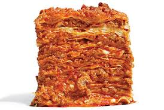

Lasagna
Home

Description
Lasagna is a dish composed of layers of noodles and filling. It is one of my favorite pasta dishes
Ingredients
- 15 oz. ricotta cheese
- 1 large egg
- 2 cups mozzarella cheese
- 3/4 cup Parmesan cheese
- 2 teaspoons Italian seasoning
- 1/2 teaspoon salt
- 1/4 tsp pepper
- 1 tablespoon olive oil
- 1 yellow onion
- 3/4 lb. ground beef
- 3/4 lb. ground Italian sausage
- 3 cloves garlic
- 1/2 cup chicken broth
- 40 oz. marinara sauce
- 1 tablespoon tomato paste
- 1 teaspoon hot sauce
- 1 teaspoon Worcestershire sauce
- 12 lasagna noodles
- 2.5 cups mozzarella cheese
Steps
- Combine cheese filling ingredients in a bowl an set aside
- Heat olive oil over medium heat and add diced onions
- Add meats and garlic. Cook until cooked through
- Add chicken broth to clean the sides of the pan
- Add marinara sauce, tomato paste, hot sauce, and Worcestershire sauce; Bring to a boil then reduce to a simmer
- Preheat over to 375 F
- Boil noodles
- Make layers to your liking
- Bake for 35 minutes